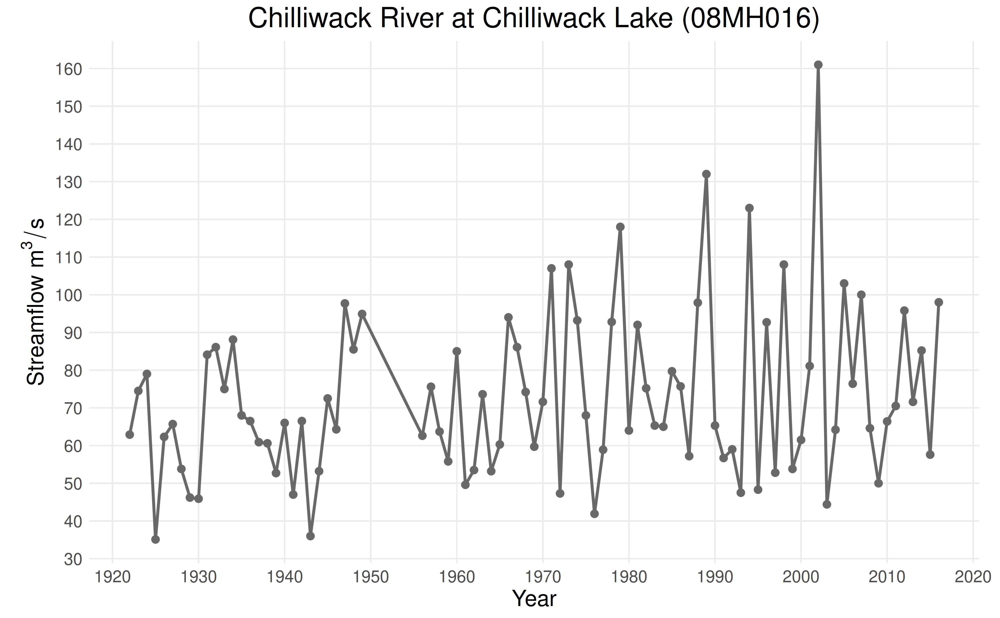
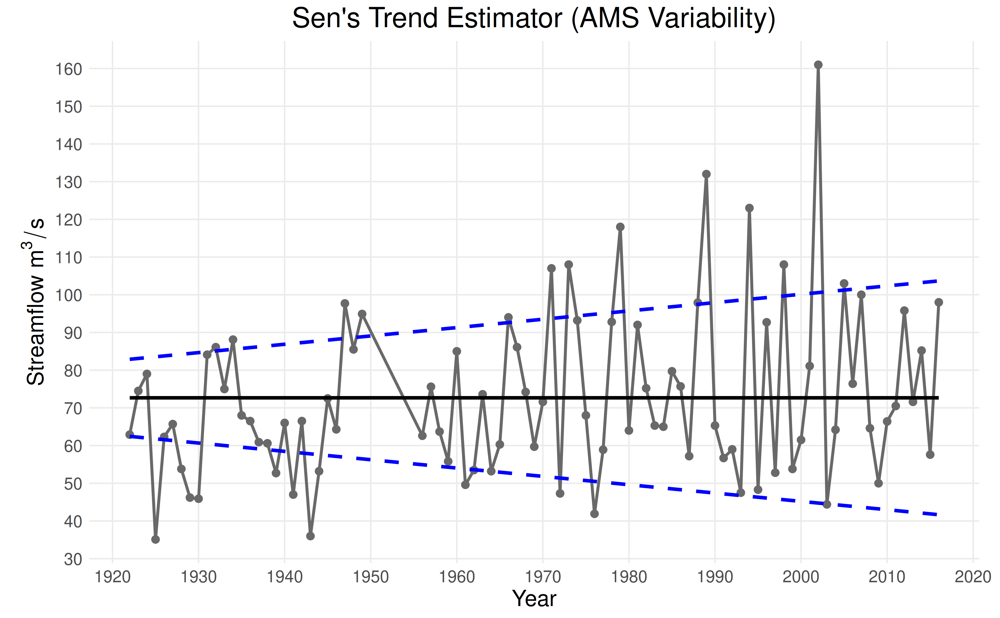
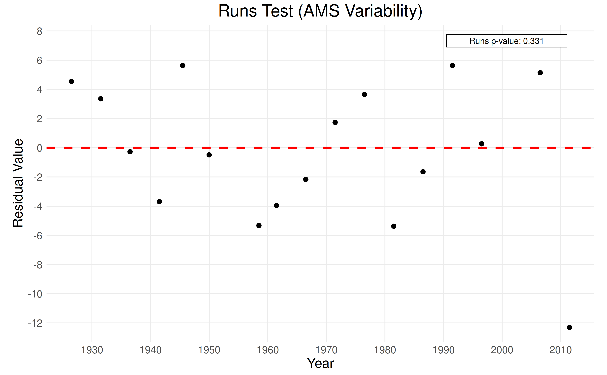

Many factors can produce nonstationarity in annual maximum
series (AMS) data, including changes in climate, land use/cover, and
water management. This vignette demonstrates how to use the
ffaframework to check for evidence of nonstationarity in
the variability of a time series.
List of Tests
Mean Trend Tests
| Function | Purpose |
|---|---|
eda_mk_test |
Tests for a monotonic trend (Mann-Kendall test). |
eda_bbmk_test |
Tests for a monotonic trend under serial correlation (BBMK test). |
Stationarity Tests
| Function | Purpose |
|---|---|
eda_spearman_test |
Tests for serial correlation (Spearman test). |
eda_kpss_test |
Tests for a stochastic trend (KPSS test). |
eda_pp_test |
Tests for a deterministic trend (Phillips-Perron test). |
Variability Trend Tests
| Function | Purpose |
|---|---|
| MW-MK Test | Tests for a trend in the variability (MWMK test) |
eda_white_test |
Tests for time-dependence in the variability (White test). |
Trend Estimation (Mean & Variability)
| Function | Purpose |
|---|---|
eda_sens_trend |
Estimates slope and intercept of a linear trend (Sen’s trend estimator). |
eda_runs_test |
Evaluates residuals’ structure under linear model assumptions (runs test). |
Case Study
This vignette will explore data from the Chilliwack River at
Chilliwack Lake (08MH016) hydrological monitoring station. The
remoteness of this station means that trends annual maxima are caused by
changes in climate as opposed to changes in land use or cover. Data for
this station is provided as CAN-08MH016.csv in the
ffaframework package.
library(ffaframework)
df <- data_local("CAN-08MH016.csv")
head(df)
#> year max
#> 1 1922 62.9
#> 2 1923 74.5
#> 3 1924 79.0
#> 4 1925 35.1
#> 5 1926 62.3
#> 6 1927 65.7
plot_ams_data(df$max, df$year, title = "Chilliwack River at Chilliwack Lake (08MH016)")
Assessing Trends in the Variance
MWMK Test
The MWMK test is used to detect trends in the variability of a time series. First, a moving-window algorithm is used to estimate the variability of the AMS data. Then, the Mann-Kendall test is applied to the series of standard deviations to check for a trend.
The data_mw_variability estimates the moving-window
standard deviations and the eda_mk_test function performs
the Mann-Kendall test.
mw <- data_mw_variability(df$max, df$year)
mwmk_test <- eda_mk_test(mw$std)
print(mwmk_test$p_value)
#> [1] 0.001463998Conclusion: At a p-value of \(0.0015\), we reject the null hypothesis. There is evidence of a linear trend in the variability in the data.
White Test
The White test checks for heteroskedasticity, or general time-dependence in the variability. The null hypothesis is homoskedasticity, or constant variability in the data.
white_test <- eda_white_test(df$max, df$year)
print(white_test$p_value)
#> [1] 0.1175955Conclusion: At a p-value of \(0.1176\), we fail to reject the null hypothesis. There is no statistical evidence of heteroskedasticity.
Sen’s Trend Estimator
While the previous tests provide evidence for a monotonic trend in the variability, they do not estimate the slope or intercept of this trend. We can estimate the monotonic trend using Sen’s trend estimator, which uses a nonparametric approach that is robust to outliers.
eda_sens_trend() takes two arguments: the data (either
an annual maximum series or vector of standard deviations) and the
corresponding vector of years. Alternatively,
plot_ams_data() can be used to run Sen’s trend estimator on
the data and/or variability series and then plot the results. It takes
the optional arguments plot_mean and
plot_variability in addition to the data and
years.
plot_ams_data(
df$max,
df$year,
plot_mean = "Constant",
plot_variability = "Trend",
title = "Sen's Trend Estimator (AMS Variability)"
)
Note: The covariate is computed using the formula \((\text{years} - 1900) / 100\).
Runs Test
Sen’s trend estimator assumed that the nonstationarity is linear. The
runs test assess the feasibility of the linearity assumption by checking
the residuals for randomness. If the residuals are random (the null
hypothesis), there is evidence that the underlying trend is linear. The
eda_runs_test() function takes the residuals from
eda_sens_trend() as the first argument and the observation
years as the second argument.
sens_trend <- eda_sens_trend(mw$std, mw$year)
runs_test <- eda_runs_test(sens_trend$residuals, mw$year)
print(runs_test$p_value)
#> [1] 0.3311375
plot_runs_test(runs_test, title = "Runs Test (AMS Variability)")
Conclusion: At a p-value of \(0.3311\), we fail to reject the null hypothesis. There is evidence that the residuals are random and a linear trend is suitable for the data.